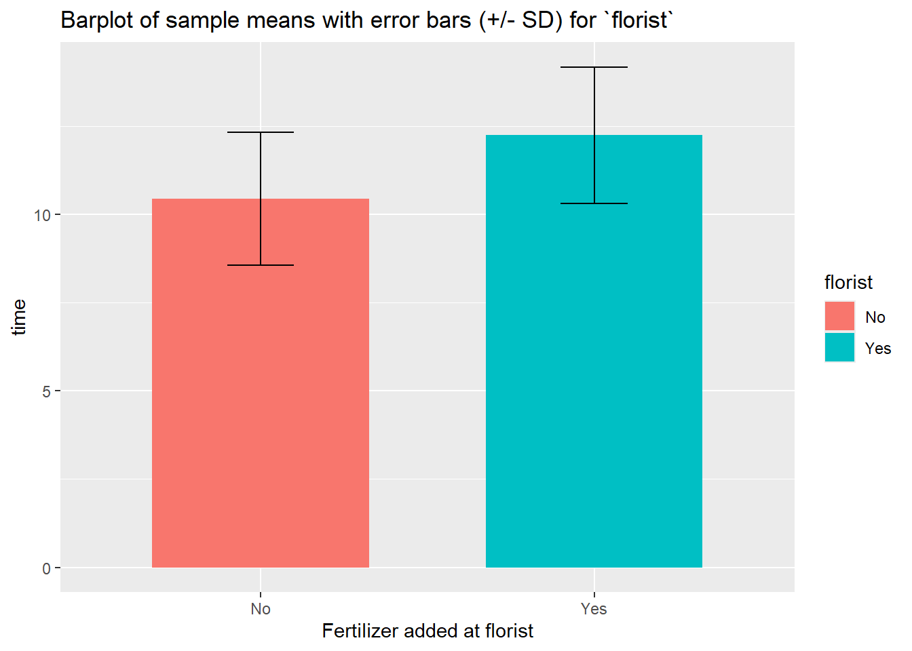
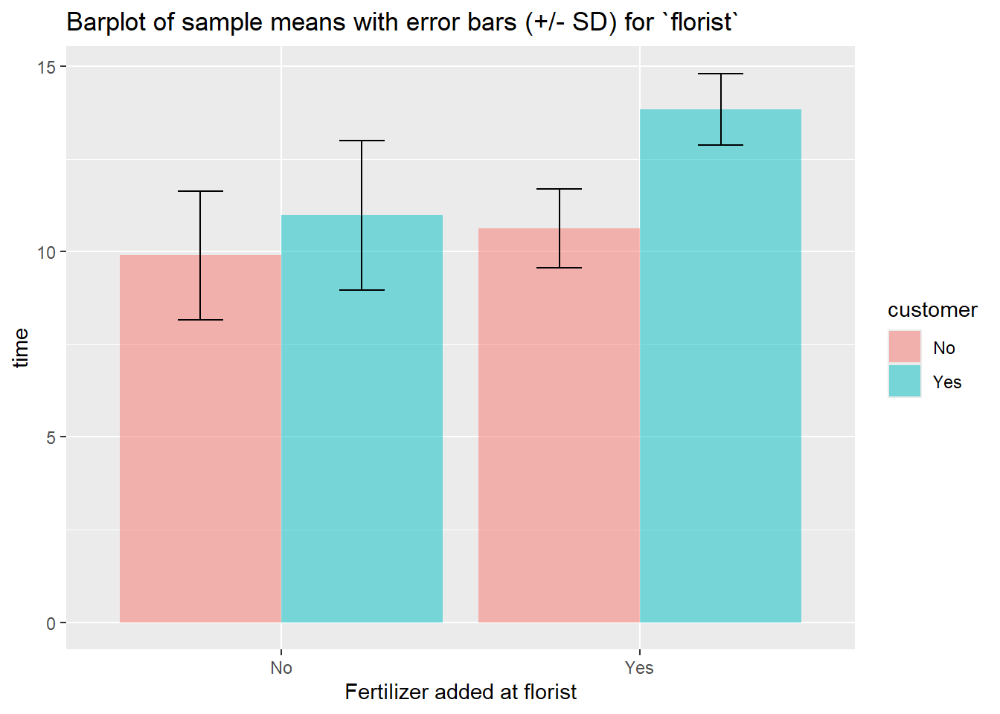
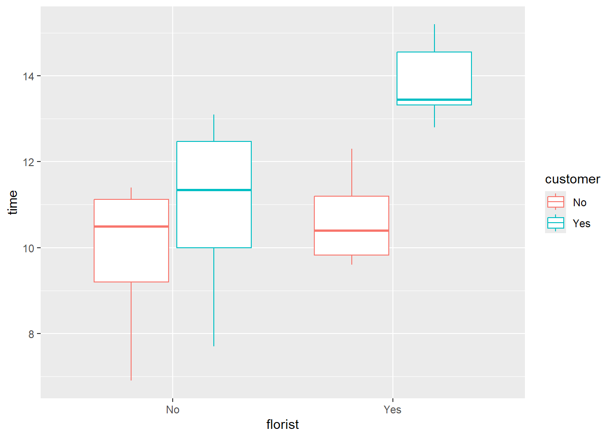
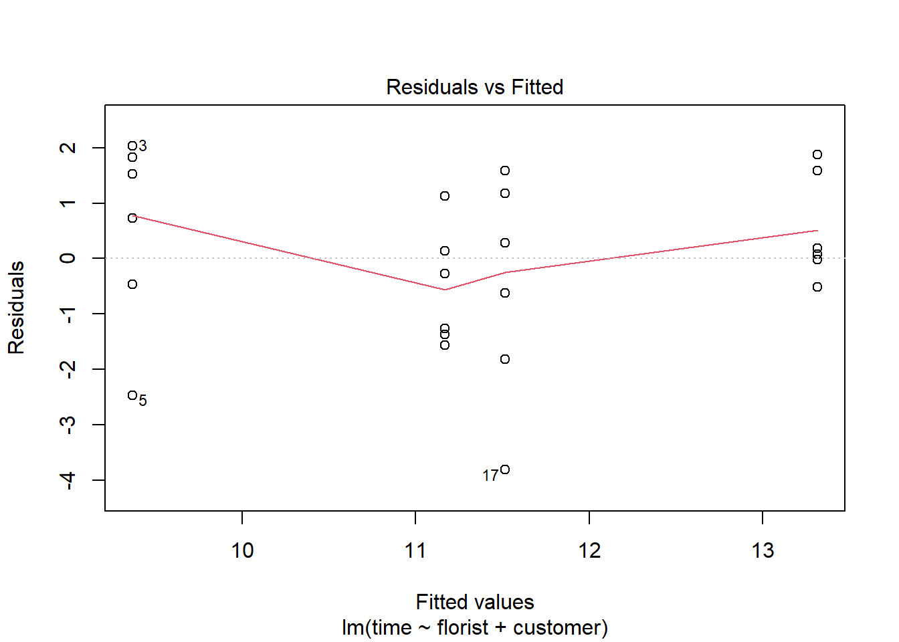
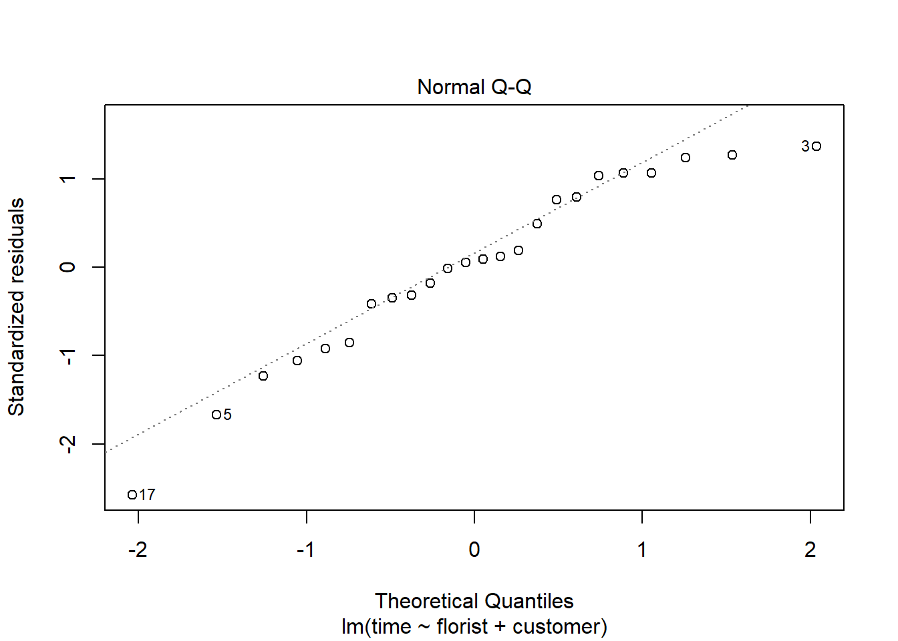

Chapter 7 Two-way analysis of variance
library(tidyverse)
library(emmeans)
library(vtable)7.1 When to use this model?
A two-way ANOVA is used to estimate how the mean of a quantitative variable changes according to the levels of two categorical variables. You can use a two-way ANOVA when you want to know how two independent variables, in combination, affect a dependent variable. In this example we will use two-way anova to see if applying fertilizer to flowers at the florist or/and at the customer effects the lifespan of a rose.
7.2 Organizing data
df <- read.table("data/3_1_roser.txt", header = TRUE, sep = "", dec = ".", colClasses = c(rep("factor",4),"numeric"))
print(as_tibble(df))## # A tibble: 24 × 5
## gardener florist customer flor time
## <fct> <fct> <fct> <fct> <dbl>
## 1 0 0 0 1 10.1
## 2 0 0 0 2 8.9
## 3 0 0 0 3 11.4
## 4 1 0 0 1 10.9
## 5 1 0 0 2 6.9
## 6 1 0 0 3 11.2
## 7 0 1 0 1 9.6
## 8 0 1 0 2 9.9
## 9 0 1 0 3 11.3
## 10 0 0 1 1 11.8
## # ℹ 14 more rowsAs this chapter is about two-way-ANOVA we will only look at two categorial variables and a responsvariable. For this data our respons variable is time and we choose florist and customer as our explanatory variables.
df = subset(df, select = c("florist","customer","time"))
print(as_tibble(df))## # A tibble: 24 × 3
## florist customer time
## <fct> <fct> <dbl>
## 1 0 0 10.1
## 2 0 0 8.9
## 3 0 0 11.4
## 4 0 0 10.9
## 5 0 0 6.9
## 6 0 0 11.2
## 7 1 0 9.6
## 8 1 0 9.9
## 9 1 0 11.3
## 10 0 1 11.8
## # ℹ 14 more rowsTo understand the data better its a good idea to make a table of variables. Here are two examples: One using standard R and one using the package vtable:
str(df)## 'data.frame': 24 obs. of 3 variables:
## $ florist : Factor w/ 2 levels "0","1": 1 1 1 1 1 1 2 2 2 1 ...
## $ customer: Factor w/ 2 levels "0","1": 1 1 1 1 1 1 1 1 1 2 ...
## $ time : num 10.1 8.9 11.4 10.9 6.9 11.2 9.6 9.9 11.3 11.8 ...Description <- c("If fertilizer was applied at florist","If fertilizer was applied at customer","Days before the rose withered")
Use <- c("Explanatory variable", "Explanatory variable", "Response variable")
cbind(vt(df, out = "return"),data.frame(Description,Use))## Name Class Values Description Use
## 1 florist factor '0' '1' If fertilizer was applied at florist Explanatory variable
## 2 customer factor '0' '1' If fertilizer was applied at customer Explanatory variable
## 3 time numeric Num: 6.9 to 15.2 Days before the rose withered Response variableWe can see that florist and customer are both factor variables taking either 0 or 1 as values, where a 1 indicates that fertilizer has been applied and 0 indicates that fertilizer has not been applied. i.e. if florist has a value of 1 the fertilizer was applied at the florist. time is a numerical variable ranging from 6.9 to 15.2 and indicates how many days the rose survived.
7.3 Data exploration
It is convenient to compute summarizes of the outcome divided by the factors:
sum_customer <- df %>%
group_by(customer) %>%
summarise(
n = n(),
mean_time = mean(time),
sd_time = sd(time),
median_time = median(time))
sum_customer## # A tibble: 2 × 5
## customer n mean_time sd_time median_time
## <fct> <int> <dbl> <dbl> <dbl>
## 1 0 12 10.3 1.42 10.5
## 2 1 12 12.4 2.13 13.0This table suggests that applying fertilizer at the costumers has a possitive effective on the lifespan of the roses.
sum_florist <- df %>%
group_by(florist) %>%
summarise(
n = n(),
mean_time = mean(time),
sd_time = sd(time),
median_time = median(time))
sum_florist## # A tibble: 2 × 5
## florist n mean_time sd_time median_time
## <fct> <int> <dbl> <dbl> <dbl>
## 1 0 12 10.4 1.88 10.9
## 2 1 12 12.2 1.94 12.6This table suggests that applying fertilizer at the florist has a possitive effective on the lifespan of the roses.
We can also create a table of the combinations of the categorial variables to see if there is a possible interaction effect:
sum_df <- df %>%
group_by(florist, customer) %>%
summarise(
count = n(),
mean = mean(time, na.rm = TRUE),
sd = sd(time, na.rm = TRUE),
median = median(time, na.rm = TRUE)
)## `summarise()` has grouped output by 'florist'. You can override using the `.groups` argument.sum_df## # A tibble: 4 × 6
## # Groups: florist [2]
## florist customer count mean sd median
## <fct> <fct> <int> <dbl> <dbl> <dbl>
## 1 0 0 6 9.9 1.73 10.5
## 2 0 1 6 11.0 2.03 11.4
## 3 1 0 6 10.6 1.06 10.4
## 4 1 1 6 13.8 0.965 13.4This table suggest that applying fertilizer at both the florist and the costumer simultaniously has a large possitive effect on the lifespan of the roses, i.e. it suggests there is an interaction effect.
sum_customer %>%
ggplot(aes(x = customer, y = mean_time, fill = customer)) +
geom_bar(stat="identity",
position=position_dodge(), width = .65) +
geom_errorbar(aes(ymin = mean_time- sd_time, ymax = mean_time+ sd_time), width=.2,
position=position_dodge(.9)) +
labs(title="Barplot of sample means with error bars (+/- SD) for `customer`",
x="Fertilizer added at customer", y = "time", fill = "customer") +
scale_x_discrete(breaks=c("0","1"), labels=c("No", "Yes")) +
scale_fill_discrete(breaks=c("0","1"),labels=c("No", "Yes"))sum_florist %>%
ggplot(aes(x = florist, y = mean_time, fill = florist)) +
geom_bar(stat="identity",
position=position_dodge(), width = .65) +
geom_errorbar(aes(ymin = mean_time- sd_time, ymax = mean_time + sd_time), width=.2,
position=position_dodge(.9)) +
labs(title="Barplot of sample means with error bars (+/- SD) for `florist`", x="Fertilizer added at florist", y = "time", fill = "florist") +
scale_x_discrete(breaks=c("0","1"), labels=c("No", "Yes")) +
scale_fill_discrete(breaks=c("0","1"),labels=c("No", "Yes"))
sum_df %>%
ggplot(aes(x = florist, y = mean, fill = customer)) +
geom_bar(stat = "identity", position = "dodge", alpha = 0.5) +
geom_errorbar(aes(
ymin=mean-sd,
ymax=mean+sd),
position = position_dodge(0.9),
width = 0.25) +
labs(
title="Barplot of sample means with error bars (+/- SD) for `florist`",
x="Fertilizer added at florist", y = "time")+
scale_x_discrete(
breaks=c("0","1"),
labels=c("No", "Yes")) +
scale_fill_discrete(
breaks=c("0","1"),
labels=c("No", "Yes"))
A boxplot can be good to see if there is an interaction effect (If applying fertilizer only have an effect if it is done both places)
df %>%
ggplot(
aes(x=florist,
y=time,
color = customer)) +
geom_boxplot(
outlier.colour="red",
outlier.shape=8,
outlier.size=4)+
scale_x_discrete(
breaks=c("0","1"),
labels=c("No", "Yes")) +
scale_color_discrete(
breaks=c("0","1"),
labels=c("No", "Yes"))
Here we can see that applying the fertilizer at the costumer and not the dealer, has a small positive effect, but applying both at the dealer and the costumers seems to have a large positive effect.
7.4 Fitting model
m1_interaction <- lm(time ~ florist*customer, data = df)Doing a drop1 test on our models we can see which terms in the model are considered significant, and should be kept in the model
drop1(m1_interaction, test = "F")## Single term deletions
##
## Model:
## time ~ florist * customer
## Df Sum of Sq RSS AIC F value Pr(>F)
## <none> 45.757 23.487
## florist:customer 1 6.8267 52.583 24.824 2.9839 0.09951 .
## ---
## Signif. codes: 0 '***' 0.001 '**' 0.01 '*' 0.05 '.' 0.1 ' ' 1Here we see that florist and customer are significant terms while the interaction between the two is not significant.
m1 <- lm(time ~ florist + customer, data = df)drop1(m1, test = "F")## Single term deletions
##
## Model:
## time ~ florist + customer
## Df Sum of Sq RSS AIC F value Pr(>F)
## <none> 52.583 24.824
## florist 1 19.440 72.023 30.374 7.7637 0.011063 *
## customer 1 27.735 80.318 32.991 11.0764 0.003193 **
## ---
## Signif. codes: 0 '***' 0.001 '**' 0.01 '*' 0.05 '.' 0.1 ' ' 17.5 Validating the model
7.5.1 Why do I need to valide the model?
The two-way ANOVA can only be used given these three assumption:
- Independence of observations: Observations within each group are independent
- Homogeneity of variance: The variation around the mean for each group being compared should be similar among all groups
- Normal-distributed dependent variable: The depended variable should be normally distributed
All that we extract from the two-way ANOVA model about uncertainty of estimates (later also tests) is only valid if the model assumptions are valid.
7.5.2 How do I validate the model assumptions?
The plot() function makes it easy to check the latter two assumptions about homoscedasticity and normal-distributed dependent variable. To check if the variation around the mean for each group being compared is similar among all groups we can do the following on the fitted model (here we use the model with an interaction effect):
#homogeneity of variance assumption
plot(m1, 1)
Here the assumption is fulfilled if the red line is horizontal. In this example it is almost perfectly horizontal and we would say that the assumption is fulfilled.
To check if the dependent variable is normally distributed we can make a qq-plot of the residuals:
#normality assumpttion
plot(m1, 2)
For the assumption to be fulfilled the dots need to follow the dotted line.
7.6 Hypothesis test
To do the two-way-ANOVA we need our fitted model and then do the test using joint_tests().
First we will do a two-way anova on the linear model with an interaction effect time ~ florist + customer + florist:customer, as our data exploration suggests that there may be one. The null hypothesis for this model are the same two as before plus an additional one: Applying fertilizer at the shop has no effect on the effect of applying fertilizer at the costumer.
joint_tests(m1_interaction)## model term df1 df2 F.ratio p.value
## florist 1 20 8.497 0.0086
## customer 1 20 12.123 0.0024
## florist:customer 1 20 2.984 0.0995From the summary we get a p-value of 0.0995 on the interaction effect, which means we cannot reject the null hypothesis based on our data.
Now we will do a two-way anova on the linear model time ~ florist + customer. The null hypothesis for this model are: There is no significant difference on the lifespan of the roses between applying fertilizer and not applying fertilizer at the florist, and there is no significant difference on the lifespan of the roses between applying fertilizer and not applying fertilizer at costumer.
joint_tests(m1)## model term df1 df2 F.ratio p.value
## florist 1 21 7.764 0.0111
## customer 1 21 11.076 0.0032From the summary we can see the p-value for applying fertilizer at the shop is 0.011, which means based on this test we can reject the null-hypothesis, i.e. this test suggest that there is a significant difference on whether you apply or dont apply fertilizer at the florist. The same conclusion can be drawn from the second p-value as it is 0.003.
7.7 Extracting estimates with emmeans()
Here we use the function emmeans() to calculate the estimated marginal means for all possible values of the factor variables:
m <- emmeans(m1_interaction, ~ florist*customer, test = "F")
m## florist customer emmean SE df lower.CL upper.CL
## 0 0 9.9 0.617 20 8.61 11.2
## 1 0 10.6 0.617 20 9.35 11.9
## 0 1 11.0 0.617 20 9.70 12.3
## 1 1 13.8 0.617 20 12.56 15.1
##
## Confidence level used: 0.95Now we want to compare the estimated means between values of the factor variables. This is called the constrasts:
m %>% pairs(simple = "florist")## customer = 0:
## contrast estimate SE df t.ratio p.value
## florist0 - florist1 -0.733 0.873 20 -0.840 0.4110
##
## customer = 1:
## contrast estimate SE df t.ratio p.value
## florist0 - florist1 -2.867 0.873 20 -3.283 0.0037Here we see that the mean for Florist = 0 is not significantly different from the mean for Florist = 1 when Customer = 0, but they are significantly different when customer is 1.
m %>% pairs(simple = "customer")## florist = 0:
## contrast estimate SE df t.ratio p.value
## customer0 - customer1 -1.08 0.873 20 -1.241 0.2291
##
## florist = 1:
## contrast estimate SE df t.ratio p.value
## customer0 - customer1 -3.22 0.873 20 -3.683 0.0015Here we see that the mean for Customer = 0 is not significantly different from the mean for Customer = 1 when Florist = 0, but they are significantly different when Florist is 1.
In can be of interest to take the contrast of the contrasts, to see if the effect of florist is different depending on customer (i.e. the interaction effect).
m %>%
pairs(simple = "florist") %>% ## Order of florist and customer does not matter
pairs(simple = "customer",by = NULL)## contrast = florist0 - florist1:
## contrast1 estimate SE df t.ratio p.value
## customer0 - customer1 2.13 1.23 20 1.727 0.0995Here we see that that the interaction effect is not significant.
7.8 Writing article/report
7.8.1 How to write method section
In a method section one should clearly state the methods used to produce the results presented in the paper, such that anyone reading the paper can reproduce the result given the same data. Here is an example:
To test whether applying fertilizer to the roses at the florist or the customer, has an effect on their lifespan, we have choosen to do a two-way-ANOVA test. This will also be done on their interaction effect to see if applying fertilizer both places has a bigger effect.
7.8.2 How to write results section
Doing the two-way-ANOVA test we find that both florist and customer are significant, while their interaction is not, meaning, based on the test, that there is a significant difference on whether you apply or don’t apply fertilizer at the florist or at the customer, and no significant difference between applying it at both at the same time.
7.9 Miscellaneous
7.9.1 Why to not use ANOVA tables
The classical ANOVA-table only works if the dataset is balanced (there are equal number of observations of each label within a factor). In our case this is true and we can see that anova() and joint_test() outputs the same p values (except for some rounding):
joint_tests(m1_interaction)## model term df1 df2 F.ratio p.value
## florist 1 20 8.497 0.0086
## customer 1 20 12.123 0.0024
## florist:customer 1 20 2.984 0.0995anova(m1_interaction)## Analysis of Variance Table
##
## Response: time
## Df Sum Sq Mean Sq F value Pr(>F)
## florist 1 19.440 19.4400 8.4971 0.008563 **
## customer 1 27.735 27.7350 12.1228 0.002352 **
## florist:customer 1 6.827 6.8267 2.9839 0.099509 .
## Residuals 20 45.757 2.2878
## ---
## Signif. codes: 0 '***' 0.001 '**' 0.01 '*' 0.05 '.' 0.1 ' ' 1Now i remove the 3 first observations in our dataset and we can see that the two methods output different p-values
m_test <- lm(time ~ florist*customer, data = df[-1:-3,])
joint_tests(m_test)## model term df1 df2 F.ratio p.value
## florist 1 17 7.086 0.0164
## customer 1 17 9.910 0.0059
## florist:customer 1 17 1.741 0.2045anova(m_test)## Analysis of Variance Table
##
## Response: time
## Df Sum Sq Mean Sq F value Pr(>F)
## florist 1 14.814 14.8143 5.9533 0.025939 *
## customer 1 30.176 30.1761 12.1265 0.002851 **
## florist:customer 1 4.332 4.3320 1.7409 0.204526
## Residuals 17 42.303 2.4884
## ---
## Signif. codes: 0 '***' 0.001 '**' 0.01 '*' 0.05 '.' 0.1 ' ' 1Now the order in which our variables are written in the model also changes the results in the anova() table while it is the same for joint_test()
m_test2 <- lm(time ~ customer*florist, data = df[-1:-3,])
joint_tests(m_test2)## model term df1 df2 F.ratio p.value
## customer 1 17 9.910 0.0059
## florist 1 17 7.086 0.0164
## customer:florist 1 17 1.741 0.2045anova(m_test2)## Analysis of Variance Table
##
## Response: time
## Df Sum Sq Mean Sq F value Pr(>F)
## customer 1 22.800 22.8002 9.1625 0.007605 **
## florist 1 22.190 22.1902 8.9174 0.008295 **
## customer:florist 1 4.332 4.3320 1.7409 0.204526
## Residuals 17 42.303 2.4884
## ---
## Signif. codes: 0 '***' 0.001 '**' 0.01 '*' 0.05 '.' 0.1 ' ' 1